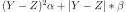
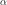
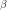
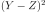

Training¶
There exists two APIs in onnxruntime. One assumes the loss function is part of the graph to derive, the other one assumes the users provides the derivative of the loss against the output of the graph. With the first API, the weights are automatically updated. In the second API, the users has to do it. It is more complex but gives more freedom.
Both API are wrapped into two classes, OrtGradientOptimizer for the first API, OrtGradientForwardBackward for the second API. Both classes make it easier to a user accustomed to scikit-learn API to train any graph with a stochastic gradient descent algorithm.
BaseEstimator¶
Ancestor to both classes wrapping onnxruntime API.
onnxcustom.training._base_estimator.BaseEstimator (self, model_onnx, learning_rate, device)
Base class for optimizers. Implements common methods such __repr__.
get_params(self, deep = False)Returns the list of parameters. Parameter deep is unused.
get_trained_onnx(self)Returns the trained onnx graph, the initial graph modified by replacing the initializers with the trained weights.
set_params(self, params)Returns the list of parameters. Parameter deep is unused.
Exceptions¶
onnxcustom.training.ConvergenceError (self, args, kwargs)
Raised when a learning algorithm failed to converge.
onnxcustom.training.EvaluationError (self, args, kwargs)
Raised when an evaluation failed.
onnxcustom.training.ProviderError (self, args, kwargs)
Raised when an input is not on the expected device (CPU, GPU).
First API: loss part of the graph¶
Helpers¶
Function add_loss_output adds a loss function to the graph if this loss is part of the a predefined list. It may be combination of L1, L2 losses and L1, L2 penalties.
onnxcustom.utils.orttraining_helper.add_loss_output (onx, score_name = ‘squared_error’, loss_name = ‘loss’, label_name = ‘label’, weight_name = None, penalty = None, output_index = None, kwargs)
Modifies an ONNX graph to add operators to score and allow training.
onnxcustom.utils.orttraining_helper.get_train_initializer (onx)
Returns the list of initializers to train.
onnxcustom.utils.onnx_rewriter.onnx_rewrite_operator (onx, op_type, sub_onx, recursive = True, debug_info = None)
Replaces one operator by an onnx graph.
OrtGradientOptimizer¶
onnxcustom.training.optimizers.OrtGradientOptimizer (self, model_onnx, weights_to_train, loss_output_name = ‘loss’, max_iter = 100, training_optimizer_name = ‘SGDOptimizer’, batch_size = 10, learning_rate = ‘SGD’, device = ‘cpu’, warm_start = False, verbose = 0, validation_every = 0.1, saved_gradient = None, sample_weight_name = ‘weight’)
Implements a simple Stochastic Gradient Descent with onnxruntime-training.
fit(self, X, y, sample_weight = None, X_val = None, y_val = None, use_numpy = False)Trains the model.
get_state(self)Returns the trained weights.
get_trained_onnx(self, model = None)Returns the trained onnx graph, the initial graph modified by replacing the initializers with the trained weights. If model is not specified, it uses the model given as an argument to this class. This graph outputs the loss and not the predictions. Parameter model can be used to use the graph before loss was added and then the returned graph will produce the predictions.
set_state(self, state)Changes the trained weights.
Second API: loss part of the graph¶
ONNX¶
Second API relies on class TrainingAgent. It expects to find the weight to train in alphabetical order. That’s usual not the case. The following function does not change the order but renames all of them to fulfil that requirement.
onnxcustom.utils.onnx_helper.onnx_rename_weights (onx)
Renames ONNX initializers to make sure their name follows the alphabetical order. The model is modified inplace. This function calls
onnx_rename_names.
LearningPenalty¶
onnxcustom.training.sgd_learning_penalty.NoLearningPenalty (self)
No regularization.
build_onnx_function(self, opset, device, n_tensors)
penalty_loss(self, device, loss, weights)Returns the received loss. Updates the loss inplace.
update_weights(self, n_bind, device, statei)Returns the received loss. Updates the weight inplace.
onnxcustom.training.sgd_learning_penalty.ElasticLearningPenalty (self, l1 = 0.5, l2 = 0.5)
Implements a L1 or L2 regularization on weights.
build_onnx_function(self, opset, device, n_tensors)
penalty_loss(self, device, inputs)Computes the penalty associated to every weights and adds them up to the loss.
update_weights(self, n_bind, device, statei)
LearningRate¶
onnxcustom.training.sgd_learning_rate.LearningRateSGD (self, eta0 = 0.01, alpha = 0.0001, power_t = 0.25, learning_rate = ‘invscaling’)
Implements the learning the same way as
sklearn.linear_model.SGDRegressor.
build_onnx_function(self, opset, device, n_tensors)
init_learning_rate(self)Updates the learning rate at the end of an iteration.
update_learning_rate(self, t)Updates the learning rate at the end of an iteration.
update_weights(self, n_bind, device, statei, gradienti, batch_size, velocity = None)
onnxcustom.training.sgd_learning_rate.LearningRateSGDNesterov (self, eta0 = 0.01, alpha = 0.0001, power_t = 0.25, learning_rate = ‘invscaling’, momentum = 0.9, nesterov = True)
Implements the learning the same way as
sklearn.linear_model.SGDRegressor.
build_onnx_function(self, opset, device, n_tensors)
init_learning_rate(self)Updates the learning rate at the end of an iteration.
update_learning_rate(self, t)Updates the learning rate at the end of an iteration.
update_weights(self, n_bind, device, statei, gradienti, batch_size, velocity = None)
LearningLoss¶
onnxcustom.training.sgd_learning_loss.AbsoluteLearningLoss (self)
Implements a square loss where Y is the output and Z the expected output. See
_onnx_grad_loss_absolute_errorfor the ONNX implementation.
build_onnx_function(self, opset, device, weight_name)
onnxcustom.training.sgd_learning_loss.ElasticLearningLoss (self, l1_weight = 0.5, l2_weight = 0.5)
Implements a square loss  where Y is the output and Z the expected output,  is l2_weight and  is l1_weight.
build_onnx_function(self, opset, device, weight_name)
onnxcustom.training.sgd_learning_loss.NegLogLearningLoss (self, eps = 1e-05, probability_function = ‘sigmoid’)
Implements a negative log loss ‘log(yt, yp) = -(1-yt)log(1-yp) - ytlog(yp), this only works for a binary classification where yp is the predicted probability, yt is the expected probability. yt is expected to be binary, yp is a matrix with two columns, the sum on every line is 1. However, this loss is usually applied after a function softmax and the gradient is directly computed from the loss to the raw score before they are processed through the softmax function (see class Log).
build_onnx_function(self, opset, device, weight_name)
onnxcustom.training.sgd_learning_loss.SquareLearningLoss (self)
Implements a square loss  where Y is the output and Z the expected output. See
_onnx_grad_loss_square_errorfor the ONNX implementation.
build_onnx_function(self, opset, device, weight_name)
Loss functions¶
onnxcustom.utils.onnx_function.function_onnx_graph (name, target_opset = None, dtype = <class ‘numpy.float32’>, weight_name = None, kwargs)
Returns the ONNX graph corresponding to a function.
OrtGradientForwardBackward¶
onnxcustom.training.optimizers_partial.OrtGradientForwardBackwardOptimizer (self, model_onnx, weights_to_train = None, loss_output_name = ‘loss’, max_iter = 100, training_optimizer_name = ‘SGDOptimizer’, batch_size = 10, learning_rate = ‘SGD’, device = ‘cpu’, warm_start = False, verbose = 0, validation_every = 0.1, learning_loss = ‘square_error’, enable_logging = False, weight_name = None, learning_penalty = None, exc = True)
Implements a simple Stochastic Gradient Descent with onnxruntime-training. It leverages class @see class OrtGradientForwardBackward.
build_onnx_function(self)Creates ONNX graph and InferenceSession related to any operations applying on OrtValue.
fit(self, X, y, sample_weight = None, X_val = None, y_val = None)Trains the model.
get_full_state(self, kind = ‘weight’)Returns the trained weights and the inputs.
get_state(self, kind = ‘weight’)Returns the trained weights.
get_trained_onnx(self, model = None)Returns the trained onnx graph, the initial graph modified by replacing the initializers with the trained weights.
losses(self, X, y, sample_weight = None)Returns the losses associated to every observation.
score(self, X, y, sample_weight = None)Return the whole score associated.
set_state(self, state, check_trained = True, kind = ‘weight’, zero = False)Changes the trained weights.